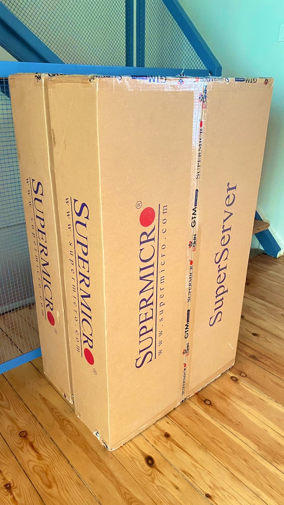
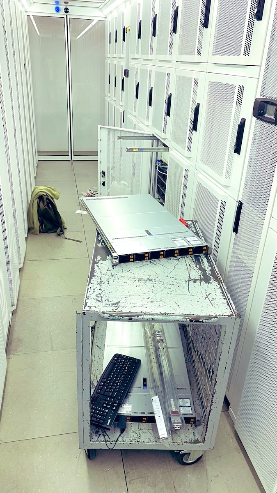
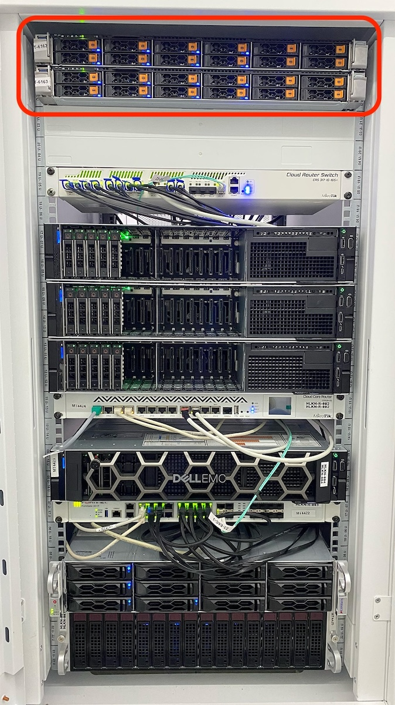

Progress Report No.2, 19.06.2025
0. TL;DR
- Separate release dates have been set for individual components (Crystal, Fractal, Bloom, Mycelium, Cortex, Reflex, Sentinel, API, Auth3, and the web application), with a slight delay introduced to the originally announced release date of 19 June 2025, as outlined in the first progress report.
- No major architectural changes have been introduced. The components remain the same.
- Physical infrastructure has been completed, with two high-grade servers installed in the Helikon data center rack in İstanbul.
- Crystal, the indexer component, is scheduled for release on 1 July 2025 in both hosted and self-hosted versions. All indexed data, including state traces, will be accessible through the Crystal API upon release.
- New integrations are being developed for Sentinel, the security component: Chainalysis Sactions API, Scorechain Sanction List, and the OFAC API.
1. Infrastructure
Two new high-grade Supermicro AS-11245HS-TNR servers, dedicated to the Submerge installation, have been installed in the Helikon data center rack, located in central İstanbul.
Together, these servers provide a total of 128 cores / 256 threads @ 3.25GHz across 4 CPUs, 2TB of DDR5 RAM, and 123.4TB of NVMe storage.
This capacity is utilised by both the RPC nodes dedicated to Submerge services and the Submerge components themselves, supporting all serviced blockchains on:



This capacity is utilised by both the RPC nodes dedicated to Submerge services and the Submerge components themselves, supporting all serviced blockchains on:
- Polkadot: Relay Chain, Asset Hub, Bridge Hub, Collectives, Coretime, People, Acala, Astar, Bifrost, Centrifuge, Hydration, Hyperbridge, Moonbeam, Mythos
- Kusama: Relay Chain, Asset Hub, Bridge Hub, Coretime, People, Bifrost, Moonriver
2. New Integrations for Sentinel
The first integration for Sentinel, the security component, was completed with Merkle Science, as reported in the first progress report.
We are now working to integrate additional data sources to enrich Submerge's access to sanctioned addresses, enhancing account attribution and risk assessment for bridged Ethereum addresses, and preparing for future integrations with other blockchains.
The new integrations in progress are:
We are now working to integrate additional data sources to enrich Submerge's access to sanctioned addresses, enhancing account attribution and risk assessment for bridged Ethereum addresses, and preparing for future integrations with other blockchains.
The new integrations in progress are:
- Chainalysis Sanctions API: Checks addresses against known sanctions lists.
- Scorechain Sanctions API: Detects interactions with addresses linked to sanctioned individuals or entities, with comprehensive coverage across 14 blockchains.
- OFAC API: A global sanctions and risk database covering names, addresses, IDs, crypto wallets, business information, and more.
3. Component Release Dates
1 July 2025
8 July 2025
22 July 2025
5 August 2025
19 August 2025
26 August 2025
All components will be open-source and accompanied by documentation and API references at launch.
- Submerge Crystal: Indexes and decodes block data, extrinsics, events, and state traces for all 21 supported chains. Available in both hosted and self-hosted versions.
- Submerge API: Provides unified access to all Submerge component APIs. At this release date, it will provide access to the Crystal API, through which users can access all data made available by this component.
8 July 2025
- Submerge Sentinel: Security component that tracks balance transfers within and across supported blockchains. Integrated with Merkle Science, Chainalysis, Scorechain, and OFAC APIs.
22 July 2025
- Submerge Mycelium: Tracks cross-chain entities such as XCM messages, token transfers, and accounts.
- Submerge Auth3: Provides authentication and authorisation via wallet signatures and predefined access rules.
5 August 2025
- Submerge Fractal: Maps decoded storage items to queryable canonical schemas. Deployed per chain.
- Submerge Bloom: Transforms the output of Fractal into queryable relational models, defined through DSL specifications. Deployed per chain.
19 August 2025
- Submerge Cortex: Hosts data processing algorithms including clustering, community detection, linking, anomaly detection, autoencoders, and association mining.
- Submerge Reflex: Hosts real-time analysis algorithms and functions.
26 August 2025
- Submerge Web Application: The grid-based front-end application for the complete suite.
All components will be open-source and accompanied by documentation and API references at launch.
7. Conclusion
Albeit with delays, our data research and development work continues, committed to delivering a complete data suite for the Polkadot ecosystem.
For any questions or inquiries, please reach out to us at info@helikon.io.
For any questions or inquiries, please reach out to us at info@helikon.io.